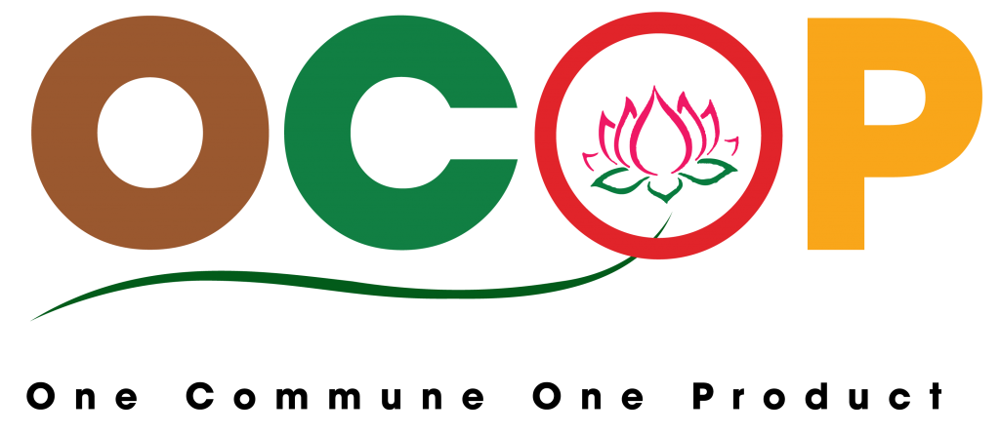

Chương trình OCOP (One Commune One Product-Mỗi xã một sản phẩm) bao gồm 26 bộ tiêu chí dành cho 26 nhóm sản phẩm khác nhau để hỗ trợ phân hạng sản phẩm căn cứ vào kết quả đánh giá sản phẩm.
Đây là chương trình học tập từ chương trình OVOP (One Village One Product) ra đời từ năm 1979 của Nhật Bản nhằm mang lại nhiều lợi ích hơn về mặt kinh tế, đem lại nhiều cơ hội quảng bá thương hiệu sản phẩm, đẩy mạnh tiêu thụ, mở rộng thị trường, gia tăng thu nhập, nâng cao đời sống vật chất và tinh thần cho người dân khu vực nông thôn. Chương trình mang mục đích phát triển kinh tế theo hướng phát triển nội lực và gia tăng giá trị cho khu vực nông thôn với trọng tâm là phát triển nông nghiệp, phi nông nghiệp, dịch vụ có lợi thế ở mỗi địa phương theo chuỗi giá trị.
Các công đoạn của chương trình thông thường vẫn làm việc thủ công, lưu trữ hồ sơ dạng bản cứng và chấm điểm bằng tay,... Điều này gây tốn kém về chi phí, thời gian, công sức.
Nhằm hỗ trợ quản lý, đánh giá, chấm điểm và phân hạng sản phẩm nông nghiệp một cách thuận tiện hơn, ứng dụng công nghệ thông tin vào đời sống nhóm quyết định thực hiện đề tài: “XÂY DỰNG WEBSITE HỖ TRỢ ĐÁNH GIÁ OCOP”..
Các chức năng chính:
Nhóm sinh viên thực hiện:
| Họ và tên | Mã sinh viên | Lớp |
|---|---|---|
| Trương Văn Khải | 611236 | K61THA |
| Nguyễn Ngọc Công | 611213 | K61THA |